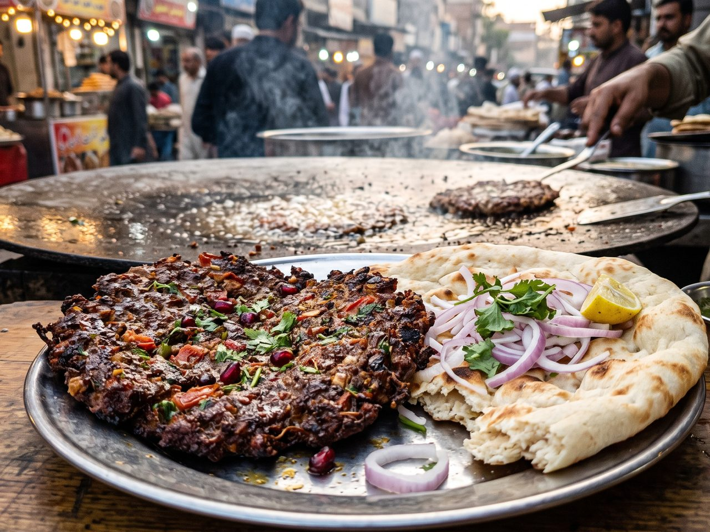

Signature
Chapli kabab
A wide, flat patty of minced beef mixed with tomato, coriander, crushed pomegranate seeds and gram flour, pressed thin and shallow-fried on a big steel griddle. Crisp at the frilly edges, soft in the middle, eaten torn into naan with raw onion. The name comes from how flat it is — and a proper one is nearly the size of a plate.